AsLe
-
Facultatea de Informatica Iasi , Universitatea Alexandru Ioan Cuza
Cuprins
1.Înregistrarea și autentificarea
2.Desenarea simbolurilor
3.Vizualizarea și distribuirea progresului
4.Dashboard-ul de administrator
1.Înregistrarea și autentificarea
Pentru a intra în aplicație este nevoie de înregistrare sau de autentificare.
Prima pagină afișată este cea de login. Unde fie utilizatorul se conectează cu email și parolă sau cu contul de Google (chiar dacă nu s-a înregistrat cu contul de Google, merge direct din formularul de login înregistrarea cu Google).
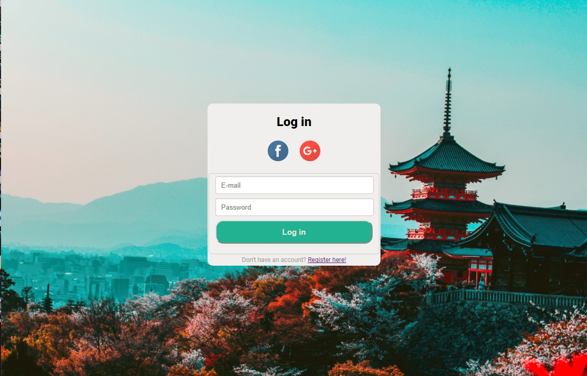În caz că utilizatorul dorește să își creeze cont, poate apăsa în josul formularului de Login pe "Register here!" și următorul formular va apărea.
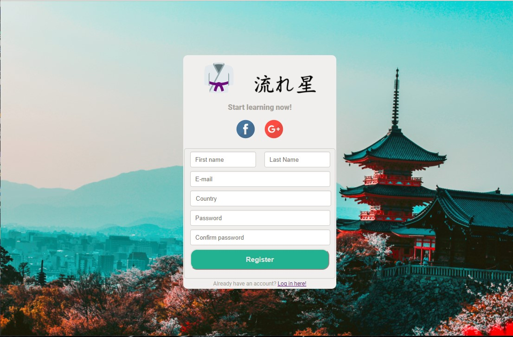După ce una din cele două operații au fost terminate cu succes, utilizatorul va intra în aplicația propriu zisă.
2. Desenarea simbolurilor
După autentificare cu succes în aplicația, va apărea următoarea pagină ce conține lista de lecții și în colțul de dreapta sus un link către pagina de profil a utilizatorului.
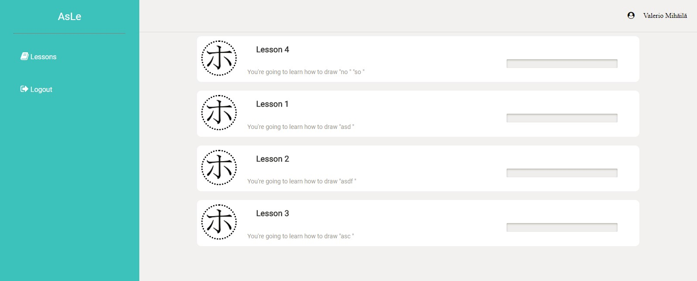După ce intram pe o lecție putem observa animația în partea de sus a chenarului de desenat, săgeți de navigare între simbolurile lecției, cât și fundalul gri reprezentând simbolul ce vine în ajutorul utilizatorului pentru a respecta cât mai bine desenarea simbolului.
Ce e marcat cu roșu reprezintă deviații ale utilizatorului de la acel contur.
În josul chenarului avem butonul "Test", care trimite desenul utilizatorului către aplicație pentru a-l verifica și a-i da un scor, iar "Cancel" pentru a anula ce a desenat.
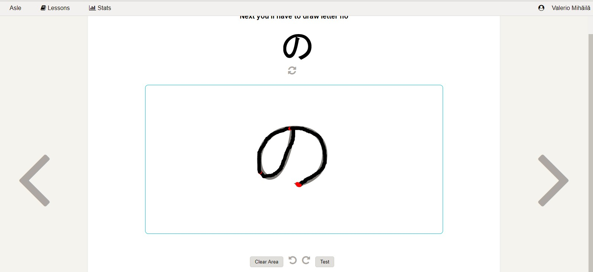Iată un exemplu de evaluare a unui simbol.
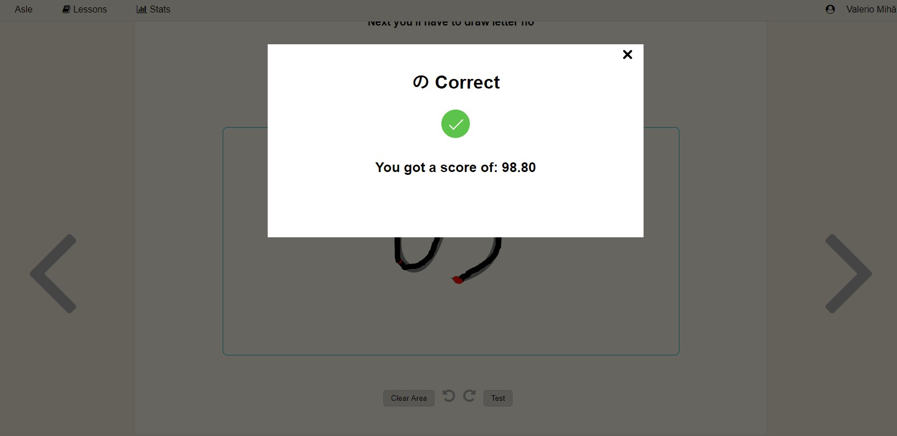3.Vizualizarea și distribuirea progresulue
Pe pagina de profil a utilizatorului se pot observa datele despre acesta cât și nivelul actual (culoarea centurii).
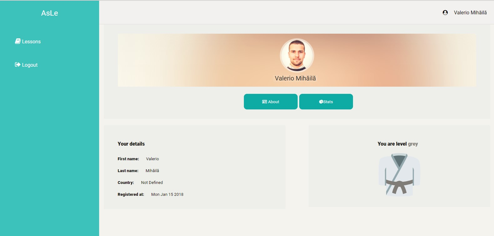Iar daca dăm click pe tab-ul "Stats" de sub poza de profil a acestuia, vom accesa statisticile generate în urma desenării simbolurilor, ce marchează progresul acestuia în aplicație.
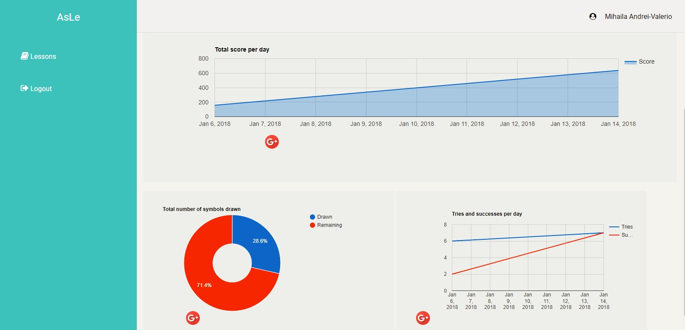Pentru a distribui progresul pe rețeaua de socializare "Google+", putem da click pe iconița specifică din josul graficului, iar pop-up de genul va apărea.
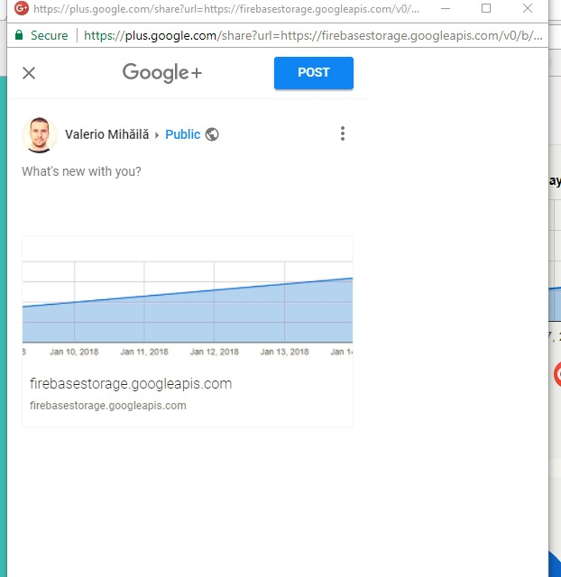4.Dashboard-ul de administrator
Un utilizator de admin poate intra în aplicație precum un utilizator obișnuit. La intrarea unui utilizator în aplicație se verifică ce fel de utilizator este, pentru a ști ce pagini putem face disponibile pentru acesta. În cazul adminului, el are acces la propriul său dashboard pentru a gestiona lecțiile.
Pagina de întâmpinare a administratorului dupa autentificare este cea de mai jos, care cuprinde meniul din stânga și lecțiile disponibile în acest moment în aplicație
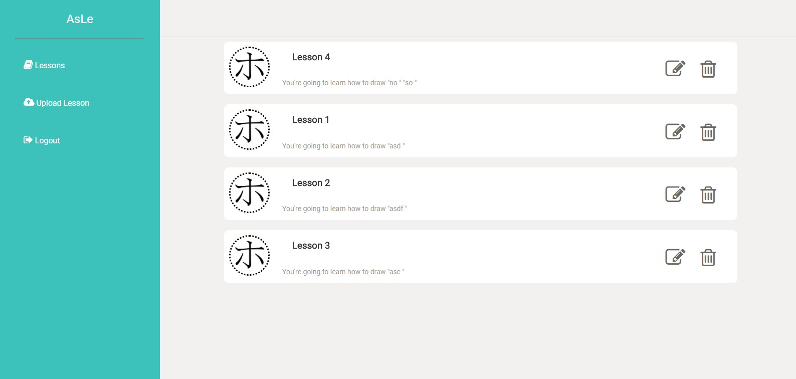Dacă administratorul apasă pe iconița în formă de "coș de reciclat", acesta va putea șterge o lecție cu toate simbolurile aferente ei.
Dacă dă click pe "creion", acesta va putea edita lecția cu pricina.
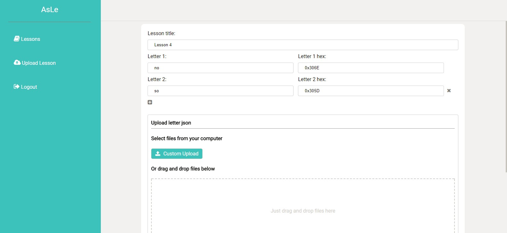 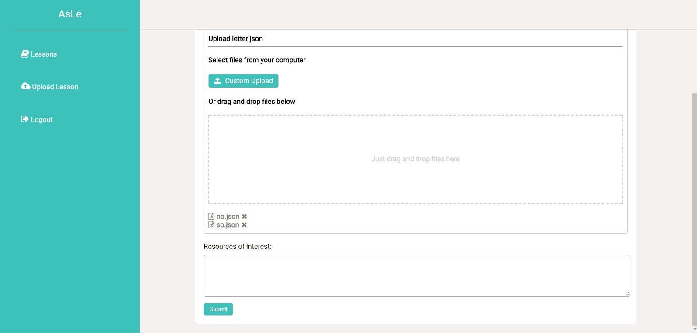Pe bara din stânga putem observa butonul "Upload Lesson", ce va trimite la un formular de completare pentru a înregistra o nouă lecție cu simbolurile aferente în aplicație.
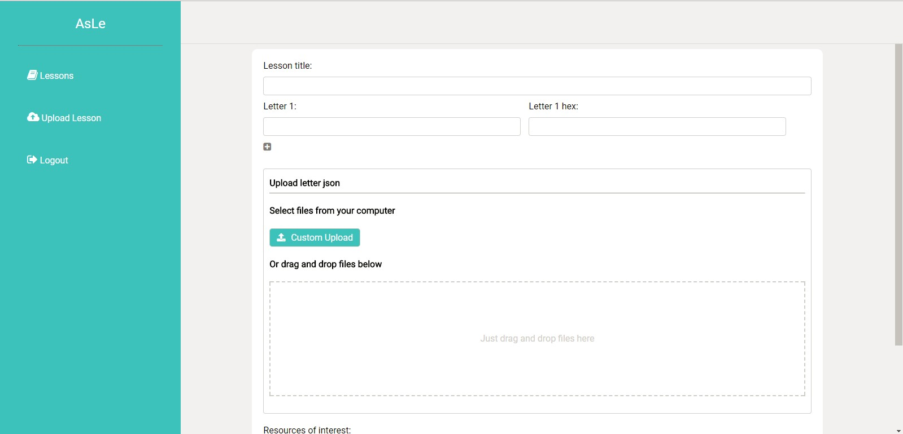